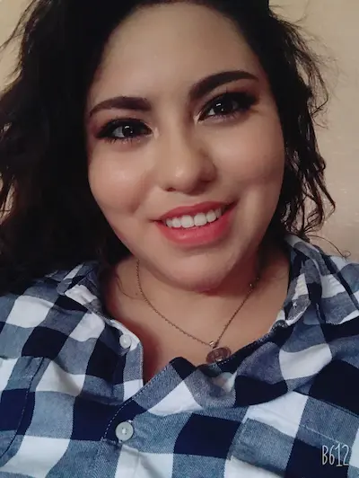

Iztamaude Mera | WDD 130
Hello! My name is Iztamaude Mera-Lagos. My name means woman gift from God. I go by Izta (east-a). I live in Casa Grande, Arizona. I am married and we have a beautiful 2 month old boy named Mathayus. I served my mission in Honduras, the San Pedro Sula East Mission. That's where I met my husband from Peru. I have always been passionate about art and creating. I love to make inticrate nail art, from 3D designs to portraits. I found my love for coding through BYU Pathway.